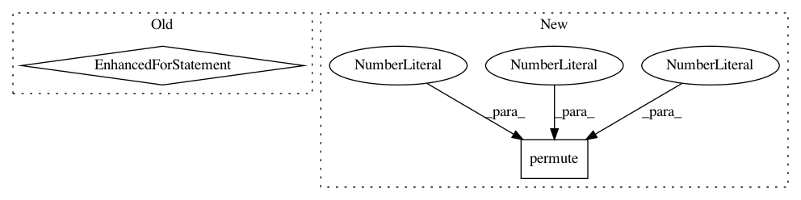

83dc25dbc8b4ed98b4cc952e3cb35668e5a65490,coco_eval.py,,evaluate_coco,#Any#Any#Any#,11
Before Change
coco_eval_stats = coco_eval.stats
for index, result in enumerate(coco_eval_stats):
print("{}. {}: {}".format(index + 1, coco_tag[index], coco_eval_stats[index]))
return
After Change
scale = data["scale"]
// run network
scores, labels, boxes = model(data["img"].permute(2, 0, 1).cuda().float().unsqueeze(dim=0))
scores = scores.cpu()
labels = labels.cpu()
boxes = boxes.cpu()
In pattern: SUPERPATTERN
Frequency: 3
Non-data size: 2
Instances
Project Name: yhenon/pytorch-retinanet
Commit Name: 83dc25dbc8b4ed98b4cc952e3cb35668e5a65490
Time: 2018-06-12
Author: yannhenon@gmail.com
File Name: coco_eval.py
Class Name:
Method Name: evaluate_coco
Project Name: Zhaoyi-Yan/Shift-Net_pytorch
Commit Name: 1483ec2a5bb7396d73339af3f07417e0c44b7965
Time: 2019-06-03
Author: yanzhaoyi@outlook.com
File Name: models/shift_net/InnerShiftTripleFunction.py
Class Name: InnerShiftTripleFunction
Method Name: backward
Project Name: IBM/adversarial-robustness-toolbox
Commit Name: 52d9d99d4c33b94706cd392c44a703afcd69fa77
Time: 2020-11-11
Author: beat.buesser@ie.ibm.com
File Name: art/estimators/object_detection/pytorch_faster_rcnn.py
Class Name: PyTorchFasterRCNN
Method Name: loss_gradient